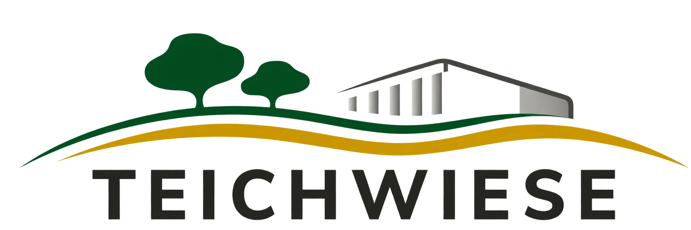
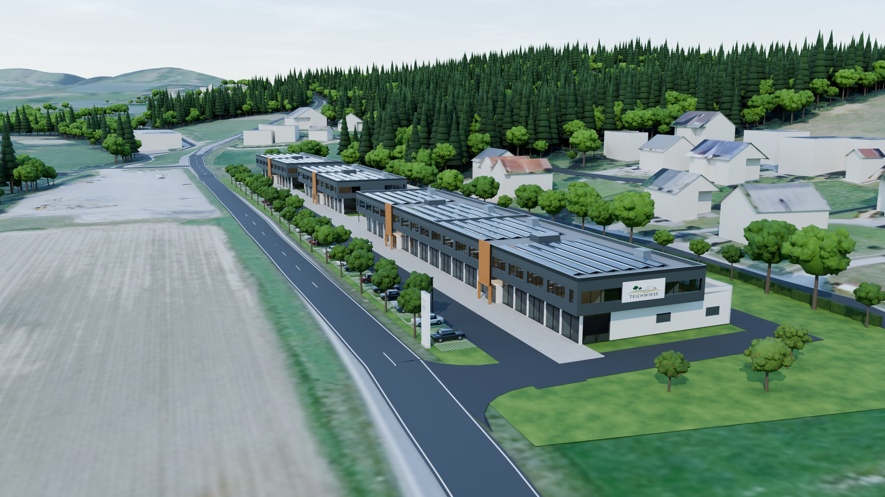
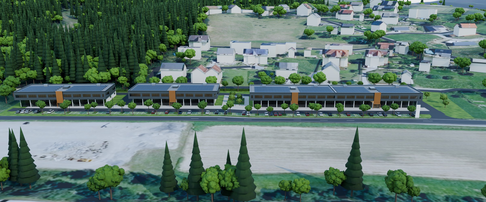

Geschäft & Ausstellung
Erdgeschossräume mit großen Schaufenstern. Im Entwurf u. a. rund 84, 144 und 188 m², mit separaten Lagerräumen an der Rückseite.

Gewerbepark Pischelsdorf am Kulm
Gemeinsam mehr bewegen – an der B54 in Pischelsdorf am Kulm.
Visualisierung nach Entwurf 3 · keine Zusage zu Ausführung oder Ausstattung
Teichwiese · Gewerbepark in Pischelsdorf am Kulm
Karl Strametz plant an der B54 einen Gewerbepark für kleine und mittlere Unternehmen. Entstehen sollen Räume für Geschäft, Büro und Dienstleistungen – mit Platz für eigene Ideen und für Angebote, die gemeinsam stärker werden.
Raum für Ihr Vorhaben
Der Entwurf verbindet verglaste Erdgeschossflächen mit Kundenkontakt und ruhigere Räume im Obergeschoss. Die Werte beschreiben Räume im Plan, keine bestätigten Mieteinheiten.
Erdgeschossräume mit großen Schaufenstern. Im Entwurf u. a. rund 84, 144 und 188 m², mit separaten Lagerräumen an der Rückseite.

Im Obergeschoss zahlreiche Büroräume von rund 44 bis 47 m² und Eckräume mit rund 64 m², erschlossen über einen Mittelgang.

Dienstleistung, Praxis oder Werkstattnahes auf Anfrage. Eignung, Zusammenlegungen und Ausbau werden gemeinsam geprüft.
Was die Teichwiese ausmacht
Direkt an der B54, im Umfeld bestehender Einkaufsangebote in Pischelsdorf.
Verglaste Erdgeschosszone zur Straße, darüber eine ruhige, klare Fassade.
Raumgrößen und Zusammenlegungen werden am tatsächlichen Bedarf ausgerichtet.
Betriebe können sich empfehlen, gemeinsam sichtbar werden und Angebote entwickeln.
3D-Modell
Drehen, zoomen und die vier Bauteile in ihrer Umgebung erkunden.
Vereinfachtes Modell nach Entwurf 3. Bauteile 3 und 4 im gleichen Gebäudetyp angenommen; Außenanlagen, Stellplätze und Zufahrten sind schematisch.
Gemeinsam mehr anbieten
Die Teichwiese soll Raum für Verbindungen schaffen. Die Beispiele zeigen das Prinzip, keine bestehenden Zusagen.
Planung, Einrichtung, Energietechnik und Handwerk beraten abgestimmt.
IT, Buchhaltung, Gestaltung und Beratung ergänzen sich.
Regionale Produzenten präsentieren saisonal – als zeitlich begrenzte Aktion.
Einblicke



Stand und nächste Schritte
Häufige Fragen
Der aktuelle Entwurf zeigt Geschäftsräume im Erdgeschoss und Büroräume im Obergeschoss. Vermietbare Einheiten, Größen und Preise werden noch festgelegt.
Vorgesehen sind Geschäft, Büro und Dienstleistungen. Andere Nutzungen prüfen wir gern im Gespräch.
Ein Termin steht noch nicht fest. Wir informieren, sobald der Zeitplan bestätigt ist.
Nein. Sie hilft, Räume und Nachbarschaft am tatsächlichen Bedarf auszurichten, und ist keine Reservierung.
Interesse anmelden
Erzählen Sie uns kurz von Ihrem Betrieb oder Ihrer Idee. Wir besprechen mit Ihnen, welche Räume und welche Nachbarschaft passen könnten.
Karl Strametz
Projektinitiator
Kontaktdaten und Anmeldeformular folgen nach Freigabe.
Ihre Interessensmeldung ist unverbindlich und keine Reservierung.